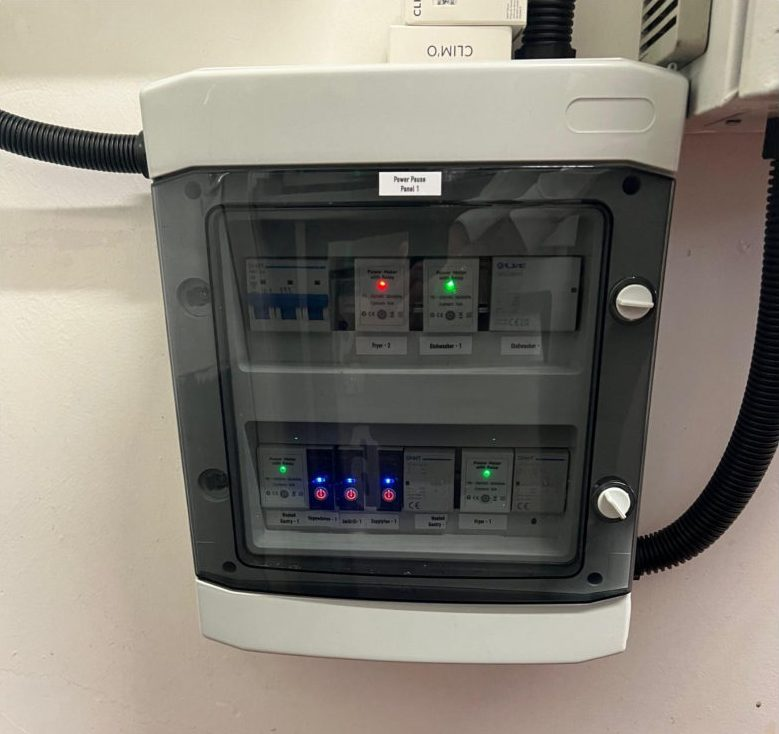
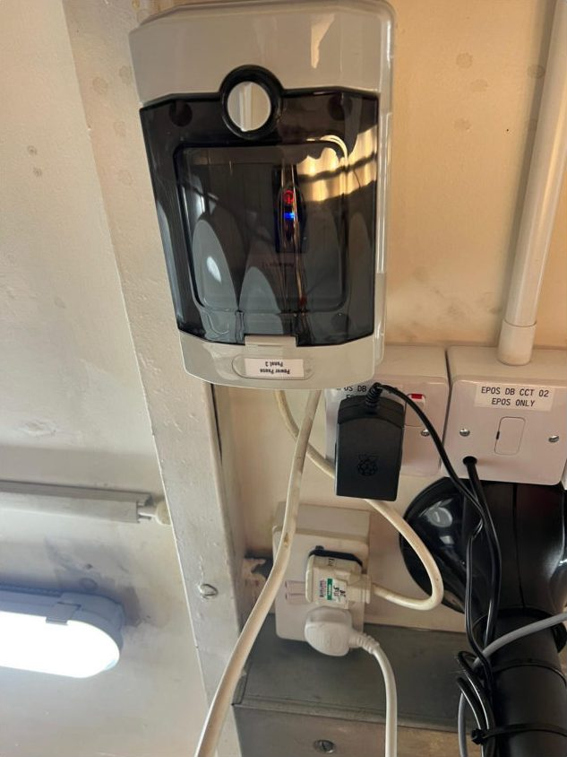
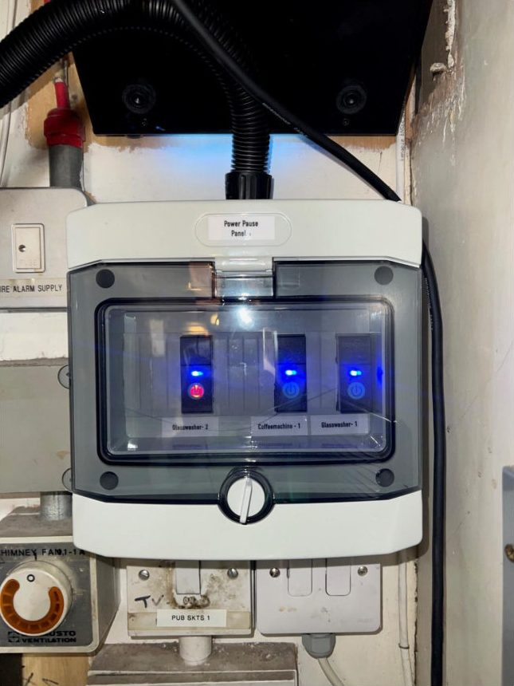
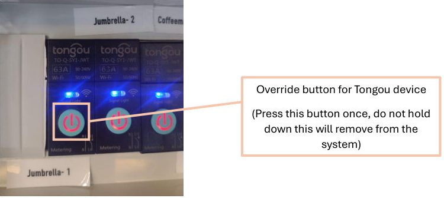
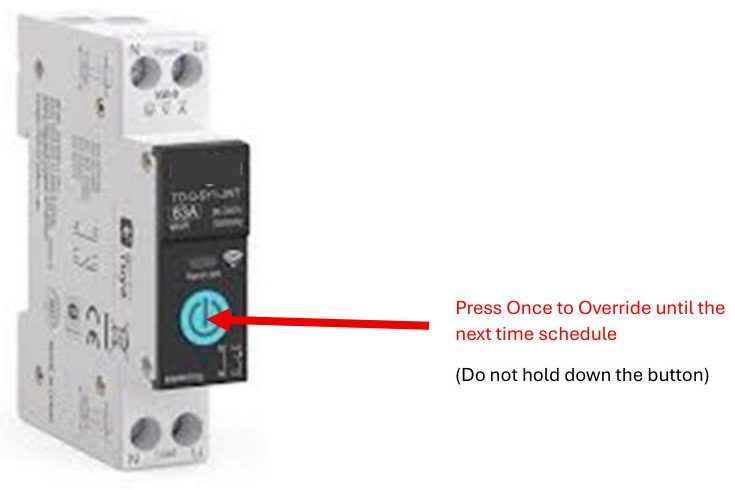
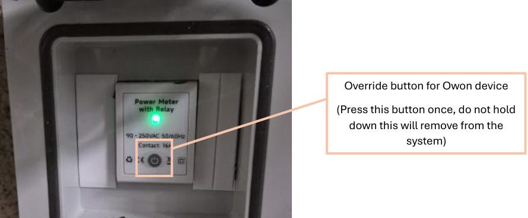
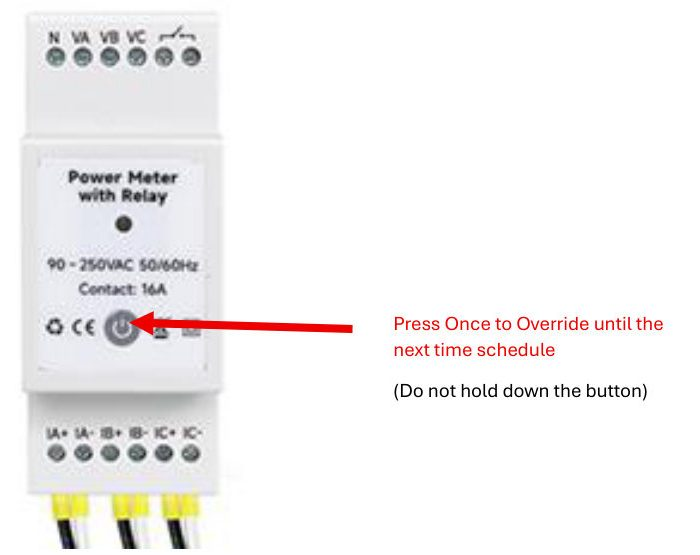
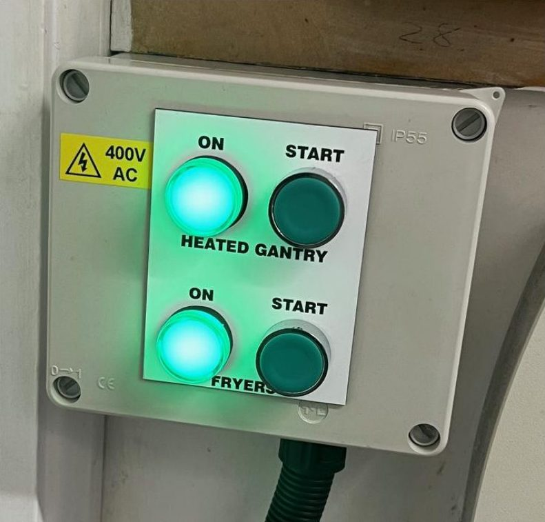
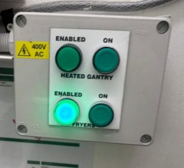
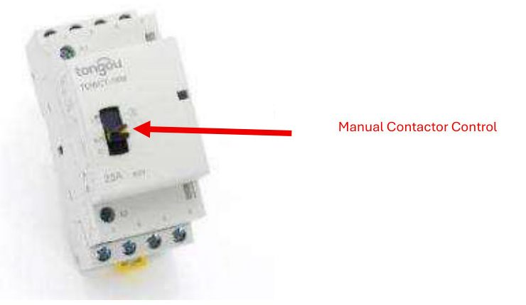

For contractors and site staff. Lighthouse IoT Support · Internal use only.
The PowerPause panel is usually in one of these places:
These are three real panels, so you know what to look for.



Every appliance controlled by Lighthouse has a Lighthouse label on it. The label links the appliance to its circuit on the PowerPause unit.
There are two types of PowerPause unit on site: Tongou and Owon. Check the label on the unit.
Press the override button once. Do not hold it down: holding the button takes the circuit off the Lighthouse system.
For fryers and heated gantries, also press the green start button on the interlock panel after the override.


Press the override button once. Do not hold it down: holding the button takes the circuit off the Lighthouse system.
For fryers and heated gantries, also press the green start button on the interlock panel after the override.


Fryers and heated gantries (bain-marie units) also have a safety interlock panel in the kitchen. After the override, press the green start button for that appliance. You will hear the contactor click and the appliance powers up. A lit green light means the appliance is available to use.


If the PowerPause is faulty and the pub needs the appliance to run, either power the coil on the contactor or, where there is one, use the contactor's manual ON button. Then report it to the Lighthouse team.

Holding the button down (rather than pressing and releasing) removes the circuit from the Lighthouse system entirely. If that happens, the IoT team will need to re-enrol the device the next working day. If you are unsure, call the OOH support line before trying again.
Email iot@airedale-group.co.uk.